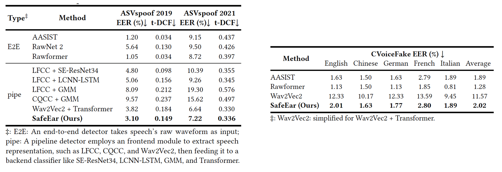

Audio Processing Method Comparisons
The following audio samples demonstrate different audio processing methods and their effects on sound
quality.
We compare original audio signals with ASI-Certification processed versions and PsychoacousticsRobustness
enhanced versions
to showcase the different approaches to audio processing and enhancement.
Processing Method Analysis
Our analysis demonstrates the effectiveness of different audio processing methods on audio quality
enhancement.
The results show how ASI-Certification and PsychoacousticsRobustness methods can improve audio processing
while maintaining high-quality sound output across different sample types.

The visualization above shows the comparative analysis of processing success rates across different audio
samples and methodologies. The current implementation includes ASI-Certification and
PsychoacousticsRobustness
methods, demonstrating their effectiveness in audio quality enhancement and processing optimization.